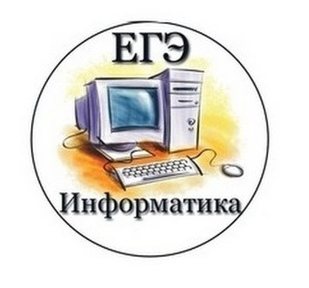

Задчей каждого веб-квеста является обучение с помощью телекомуникационной сети "Интернет", и этот квест не является исключением.
Но, как говорится, лучше один раз увидеть, чем сто раз услышать.
Поэтому источники данного веб-квеста будут ограничиваться только видеоматериалами, но это не помешает в полной мере освоить материал.
Задание:
1. Перейти во вкладку "Ресурсы"
2. Поочередно просматривать приведенные источники
3. Во время просмотра при себе иметь лист и ручку для важных пометок
4. После просмотра всех приведенных ресурсов перейти во вкладку "Примеры заданий"
5. На дополнительном листе решить поочередно оба задания
6. Перейти на данный сайт(кликабельно) и решить задания этого типа в приведенных вариантах
Удачи в получении знаний!